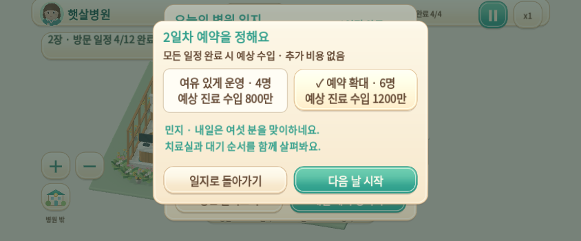
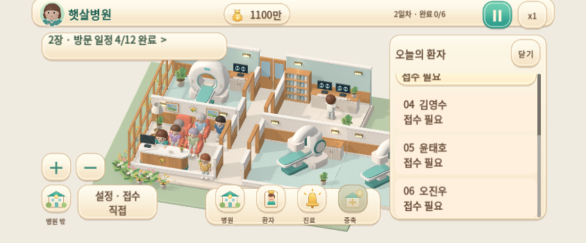
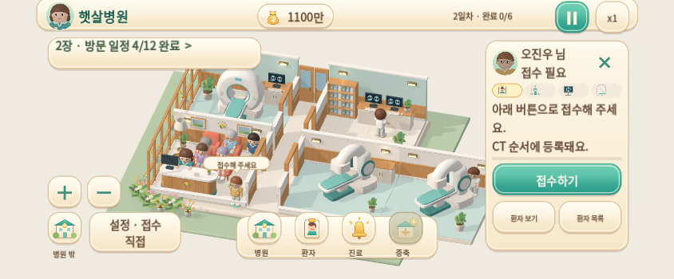
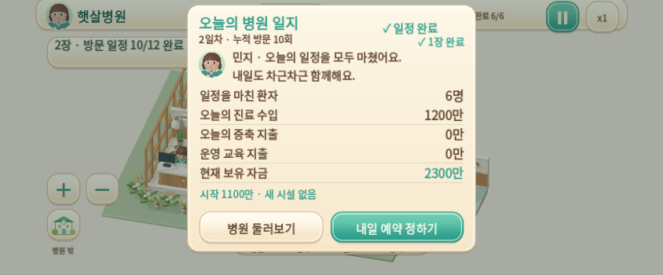
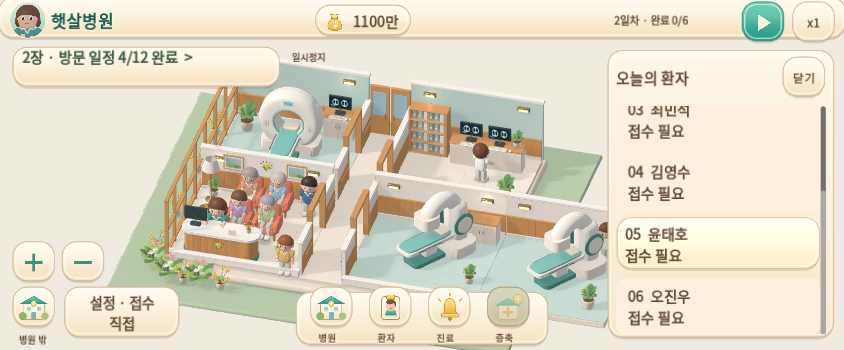
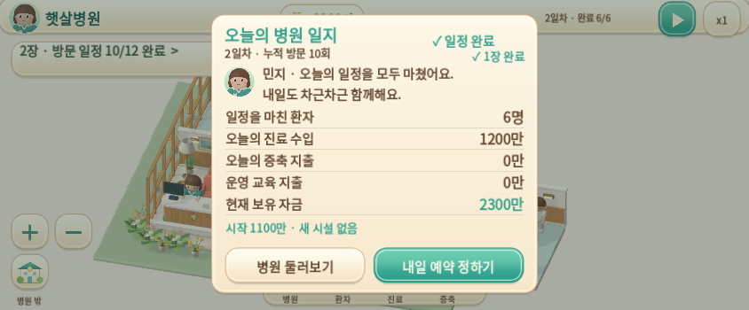

여섯 분을 맞이하는 하루
별관 규모에 따른 4명 / 6명 예약 · 실제 여섯 환자 운영
0.7.0-dev · Godot 4.6.3 · 빌드 소스 fd09e02
설계·저장 이전·검증·다운로드 · 검사와 빌드 식별 기록
모든 영상은 Linux 실제 Godot 실행, 자동 입력, 정상 1배속입니다. Android/iPhone 실기기 녹화가 아닙니다. 24fps는 영상 형식이며 게임 성능 측정값이 아닙니다. 녹화 시작 저장은 정상 운영 명령으로 준비했으며 돈·환자 상태·완료 수를 임의로 바꾸지 않았습니다.
1. 첫날 일지 → 6명 예약 → 둘째 날 0/6 · 22초
첫날 네 명 귀가와 별관 구매를 마친 1100만에서 시작합니다. 예상 수입 1200만은 미리 더하지 않습니다. 다음 날 시작을 눌러야 실제 예약이 여섯 명으로 확정됩니다. 한 구간 연속 녹화입니다.
2. 여섯 환자 대기·접수·계획·두 치료실 · 54초
둘째 날 여섯 명이 실제로 도착해 기다리는 저장에서 시작합니다. 목록 스크롤 → 첫 환자 직접 접수 → 민지에게 접수 위임 → 첫 환자 계획 직접 지시를 확인합니다. 36초 이후에는 정상 명령으로 준비한 두 치료실 동시 운영 저장으로 한 번 전환하며 화면에 구간 변경을 표시합니다. 전체 하루를 연속 녹화한 영상은 아니고, 하루 전체 정산은 별도 자동 검사 기록에 남깁니다.
3. 마지막 귀가 → 1200만 일지 → 다음 날 4명·저장 복원 · 25초
둘째 날 다섯 분은 귀가했고 마지막 환자가 나가는 저장에서 시작합니다. 실제 마지막 귀가 후에만 6명·수입 1200만 일지가 열립니다. 내일 네 명으로 확정한 뒤 실제 테스트 파일을 저장·불러와 2300만과 지난 예약 기록이 유지되는지 확인합니다. 한 구간 연속 녹화입니다.
작은 화면의 선택과 조작
844×350·844×390·915×412·1280×720에서 확인했습니다. 아래 작은 화면은 좌우 47·하단 21 픽셀 안전 영역을 모사했습니다. 버튼을 작게 줄이지 않고 환자 목록을 스크롤합니다.

선택과 최종 확정은 별도 행동

도착 상태와 실제 접수 필요 표시

추가 일반 환자 · 선택 후 별도로 접수

실제 정산 · 다음 날 예약 인원만 선택
실제 Web 빌드 · Chromium 터치 에뮬레이션

Web의 실제 저장·정산 확인 · 실기기 아님
직접 해보기
첫날 네 분의 일정을 마치고 별관을 마련하세요. 일지 → 내일 예약 정하기 → 6명 → 다음 날 시작 순서입니다. 모든 환자가 귀가한 일지에서는 다시 네 명을 선택할 수 있습니다.
Mac은 Web ZIP을 KMH/05_게임 아래 새 폴더에 풀고 iPhone 체험 열기.command를 엽니다. 같은 Wi-Fi의 iPhone에서 표시된 Mac 주소로 접속합니다. 기존 Android 앱은 삭제하지 않고 새 APK로 업데이트합니다. 실제 Mac LAN·Safari·Android 기기 실행은 아직 확인하지 않았습니다.